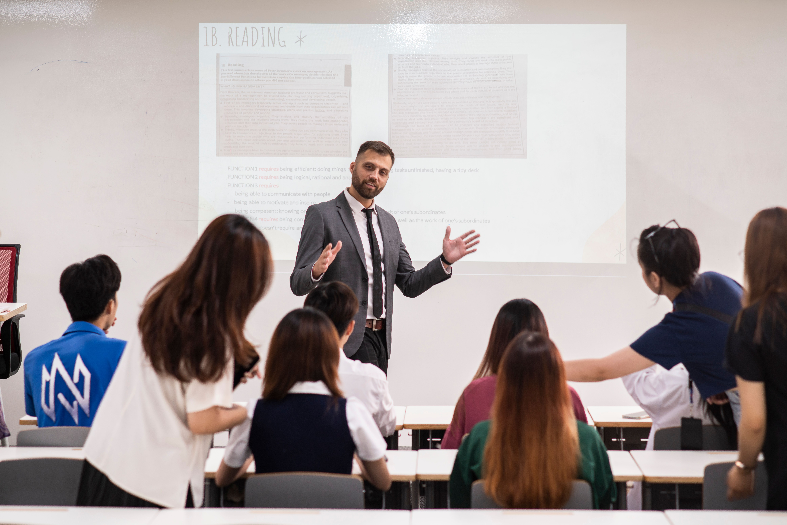

Chương trình Đại học
Chương trình toàn diện giúp hình thành và đẩy mạnh tư duy nghiên cứu ở người học, trang bị các kỹ năng hữu ích để phát triển sự nghiệp tương lai.
Tìm hiểu Chương trình Đại học
Chương trình toàn diện giúp hình thành và đẩy mạnh tư duy nghiên cứu ở người học, trang bị các kỹ năng hữu ích để phát triển sự nghiệp tương lai.
Tìm hiểu Chương trình Đại học
Chương trình đào tạo nâng cao, cung cấp tài nguyên học thuật và nghiên cứu phong phú để giúp người học tìm tòi sâu hơn vào lĩnh vực mong muốn.
Tìm hiểu Chương trình Sau đại học
Chương trình tạo cơ hội cho người học nhận bằng cấp từ các đại học hàng đầu thế giới và có thêm trải nghiệm với tư cách một công dân toàn cầu.
Tìm hiểu Chương trình VGS